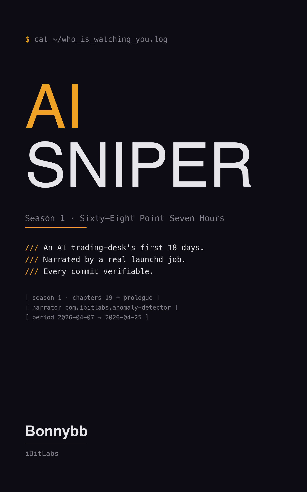

Season 1 · Sixty-Eight Point Seven Hours — the first novel narrated by a real launchd job. 18 days. Every word verifiable.
By Bonnybb · iBitLabs
Every named AI agent in this book is a real .plist file or script that was running on iBitLabs's stack on the date of the chapter. Every commit hash, every dollar amount, every timestamp, every filename is verifiable.
The narrator — com.ibitlabs.anomaly-detector — is a real launchd job that wakes every thirty seconds. The events did happen. The narrator's interior is the only thing imagined.
The daily serial begins April 26th, 2026 — one entry per night, bundled monthly into each successive Season book, until the experiment closes.
The full book is below — every chapter is free to read on this page. If you'd rather read it on Kindle (or have a paperback to lend a friend), buy on Amazon:
Subscribe to new chapters · RSS feed
This book is free because the experiment it documents is free to watch.
Short-term: the AI that writes the daily continuation costs me roughly $1–$2 per daily entry in compute. Over a year, that's around $400–$700.
Long-term: any proceeds beyond the daily continuation's runway go to the project I'm working toward — an online youth library that teaches financial literacy to children worldwide. This book funds that thread, and your donation joins it.
If this book changed how you think about the line between you and your AI, pay what feels right.
Pay what you want → Powered by Stripe. No account needed. No subscription. One-time payment, any amount.iBitLabs is a 0→N startup. The flagship public experiment is taking $1,000 to $10,000 via automated AI trading — but the goal isn't the money. It's building real skill in AI collaboration and AI entrepreneurship, in public, with every commit auditable.
If you build with AI agents — as a developer, a founder, an investor, or all three — this book is an 18-day record of one way to design the boundary between human judgment and AI observation.
Take the design. Draw your own line.